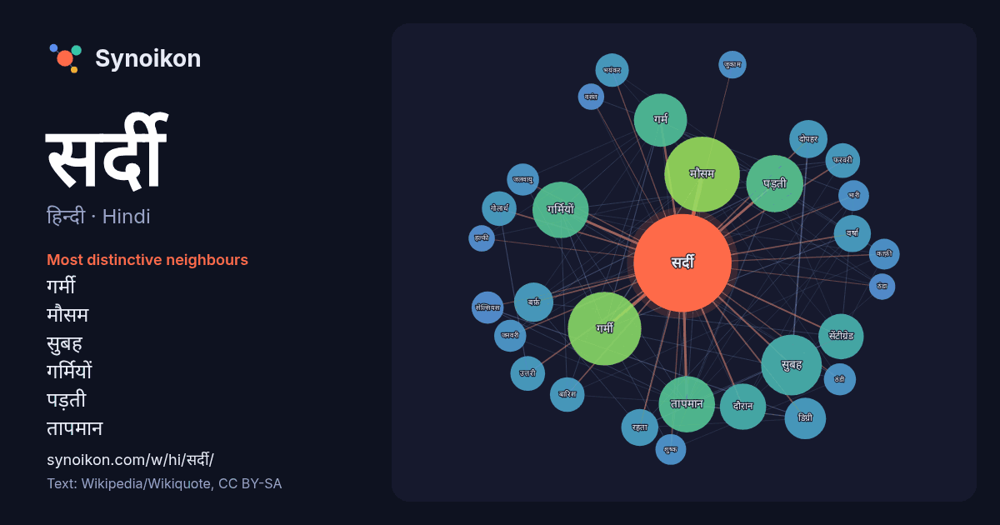

हिन्दी · Hindi · word of the day list
सर्दी
“winter” · The words found around it in 628 instances from Hindi Wikipedia, Wikiquote.

Most distinctive neighbours
- गर्मी 56×
- मौसम 52×
- सुबह 38×
- गर्मियों 34×
- पड़ती 32×
- तापमान 30×
- गर्म 28×
- सेंटीग्रेड 24×
- बर्फ़ 18×
- दोपहर 17×
- डिग्री 15×
- गोलार्ध 15×
- वर्षा 14×
- बारिश 14×
- भयंकर 13×
- ठंडी 13×
- सेल्सियस 12×
- फरवरी 11×
- शुष्क 11×
- जलवायु 11×
× = how many times more often than in general Hindi Wikipedia text.
Most frequent neighbours
- मौसम 66
- गर्मी 63
- सुबह 43
- पड़ती 38
- अधिक 37
- गर्मियों 37
- तापमान 37
- गर्म 33
- दौरान 25
- सेंटीग्रेड 24
- कम 21
- समय 21
- डिग्री 20
- बर्फ़ 18
- दोपहर 17
- रहता 16
- वर्षा 16
- उत्तरी 14
- गोलार्ध 14
- फरवरी 14
In context
- एंटीहिस्टामाइन के साथ सुस्ती जैसे कुछ दुष्प्रभाव जुड़े होते हैं। अन्य विसंकुलक (सर्दी/खांसी की दवा) जैसे कि स्यूडोएफेड्राइन भी वयस्कों में बहुत प्रभावी होते हैं। Wikipedia snippets · ज़ुकाम
- चारे के लिए किया जाता है। अक्टूबर और दिसंबर के बीच आलू की खेती होती है। सर्दी के मौसम (रबी) में गेहूँ उगाया जाता है। पूर्वी उत्तर प्रदेश - धान मक्का /गेहू Wikipedia snippets · उत्तर प्रदेश की कृषि
- को नववर्ष धूम धाम से मनाया जाता है। उत्तरी भारत में इस माह सबसे ज्यादा सर्दी पड़ती है।महीने का पहला दिन नए साल के दिन के रूप में जाना जाता है। यह औसतन Wikipedia snippets · जनवरी
- विस्तृत हैं जिनसे यहाँ काफ़ी सर्दी रहती है। बहुत से सैलानी यहाँ गर्मियों में ठन्डे मौसम का आनंद लेने आते हैं, जबकि सर्दियों में यह इलाक़ा बर्फ़ग्रस्त होता Wikipedia snippets · अर्दबील प्रांत
- को अंदर से गर्म रखता है। इसलिए पहले सर्दियों में ही इस व्यंजन को बनाया जाता था। हालांकि अब लोग इसे गर्मी व सर्दी हर मौसम में खा रहे हैं। "Siddu Recipe: Wikipedia snippets · सिद्दू
- इस महीने को आनंद और उल्लास का महीना कहा जाता है। इस महीने से धीरे धीरे गरमी की शुरुआत होती है,और सर्दी कम होने लगती है। पंचांग पूर्णिमा : होलिका दहन Wikipedia snippets · फाल्गुन
- कर और उनका सेवन कर इस त्यौहार को मनाते हैं। फरवरी से पहले पंजाब में बहुत सर्दी होती है और फिर इस महीने से मौसम में परिवर्तन आना प्रारम्भ हो जाता है और Wikipedia snippets · पंजाब (पाकिस्तान)
- पहुँच जाता है, फिर भी सर्दियों में इस से पश्चिम के इलाक़ों में ज़बरदस्त सर्दी पड़ती है जिस से वहाँ के बहुत से लोग अक्सर अपनी सर्दियाँ इस ज़िले में गुज़ारते Wikipedia snippets · टांक ज़िला
More Hindi words
- इतिहास
- ईश्वर
- कार्य
- कुत्ता
- गर्मी
- गाना
- घंटी
- घड़ी
- घोड़ा
- चाय
- चित्रकला
- छाया
- जंगल
- जलवायु
- जीवन
- तूफ़ान
- दर्पण
- द्वीप
- नक्षत्र
- नमक
- परिवार
- पहाड़
- पानी
- पैसा
- प्रकृति
- बगीचा
- बिल्ली
- भाषा
- भोजन
- माता
- मानचित्र
- मृत्यु
- मौन
- रेगिस्तान
- रेलगाड़ी
- रोटी
- वर्षा
- विज्ञान
- शक्ति
- शरद
- शहद
- शहर
- सड़क
- सत्य
- समय
- सेतु
- स्वर्ण
- स्वास्थ्य
- हृदय
Precomputed on 2026-10-09 with default settings (±5 words, medium corpus). The interactive map can refresh it with live data.